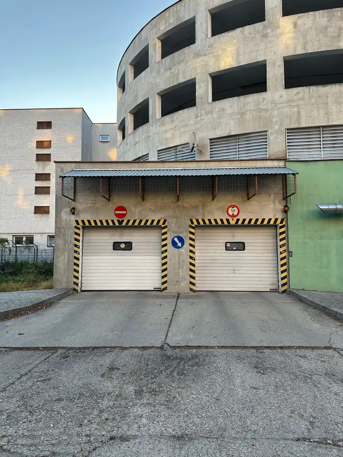
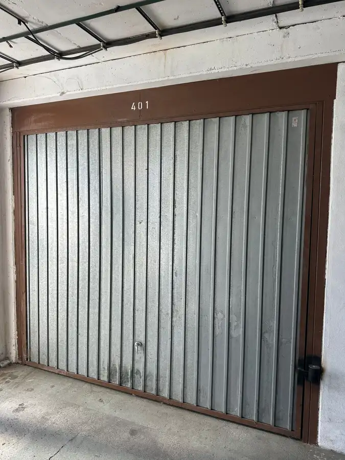

PREDAJ, samostatná garáž v garážovom dome na Pečnianskej ulici v Petržalke
Petržalka, Bratislava



- Plocha17.8 m²
- StavPôvodný stav
- VlastníctvoOsobné
O nehnuteľnosti
Ponúkame Vám exkluzívne na predaj samostatnú garáž v garážovom dome na Pečnianskej ulici v Bratislave – Petržalke.Garáž má výmeru 17,8 m² a nachádza sa na 3. z 3 podlaží garážového domu. Je suchá, bezpečná a vhodná nielen na parkovanie auta, ale aj ako praktický priestor na uskladnenie vecí.Základné informácie:- výmera: 17,8 m²- elektrina: áno, 220 V- voda: nie- plechová manuálna brána- alarmVýhodou garáže je jej umiestnenie na najvyššom podlaží garážového domu, kde je menší pohyb áut a väčší pokoj pri parkovaní.V interiéri sa nachádza hák na bezpečné uchytenie motocykla a na zadnej stene je umiestnený policový regál, ktorý poskytuje praktický odkladací priestor na pneumatiky, náradie alebo ďalšie vybavenie.Výhodou garážového domu je aj dostatočne široký manipulačný priestor medzi protiľahlými garážami, vďaka čomu je vjazd a parkovanie pohodlné aj s väčším vozidlom. Priamo na poschodí sa zároveň nachádza spoločné WC.Pečnianska ulica ponúka veľmi dobrú dostupnosť v rámci Petržalky aj rýchle napojenie smerom do centra Bratislavy či na hlavné cestné ťahy.Garáž je vhodná pre záujemcu, ktorý hľadá vlastné a bezpečné parkovanie, prípadne priestor na kombináciu parkovania a uskladnenia.Cena - 47 900,-Eur je vrátane provízie pre RK, v ktorej je zabezpečený kompletný právny servis súvisiaci s predajom nehnuteľnosti. Možnosť bezplatného zabezpečenia hypotekárneho špecialistu.Kontakt:+421 903 053 474kalamen@dconsult.sk
Parametre
- Bezpečnosť
- Alarm
- Druh
- Garáž
- Dátum zverejnenia
- 14. 09. 2026
- Elektrina
- Na pozemku - 230 V
- Energetický certifikát budovy
- nie je
- Odpadové vody
- Nedostupné
- Plyn
- Nedostupné
- Počet nadzemných podlaží
- 3
- Stav nehnuteľnosti
- Pôvodný stav
- Typ
- Predaj
- Typ konštrukcie
- Zmiešaná
- Vlastníctvo
- Osobné
- Voda
- Nedostupné
- Vybavenie
- Garáž, Sklad
- Zastavaná plocha
- 17.8 m²
- Úžitková plocha
- 17.8 m²